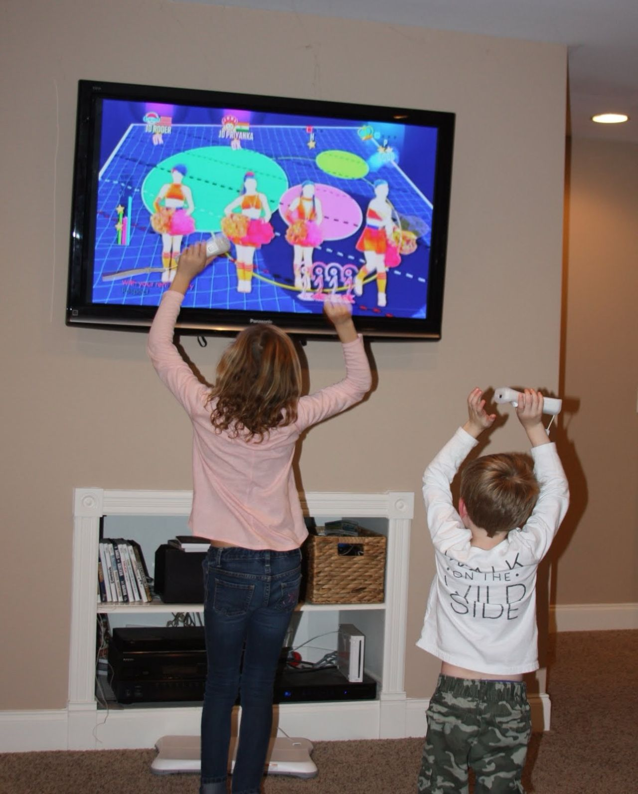

האם משחקים צריכים להילחם בתוכן חינמי, או פשוט לזרום איתו ולמנף אותו?
פורסם במקור ב LinkedIn
האם משחקים צריכים להילחם בתוכן חינמי, או פשוט לזרום איתו ולמנף אותו?
תראו את Just Dance:
יוביסופט שפכה מיליונים על פיתוח משחק ריקודים עם מנגנוני מעקב תנועה, מנויים, רכישות שירים וכל החבילה – אבל בפועל, הרבה אנשים פשוט רוקדים מול סרטוני יוטיוב, בחינם.
זה כאילו נטפליקס הייתה מפיקה סדרה מטורפת, אבל כולם היו צופים רק בתקצירים בטיקטוק.
אבל התופעה המעניינת היא שבמקום להתרסק, המותג רק מתחזק. התוכן החינמי ביוטיוב הפך את המשחק לוויראלי, מייצר אינסוף אתגרים וסוחף קהל חדש שלא בטוח היה משלם מראש.
אז אולי זאת יכולה להיות אסטרטגיה מוכוונת של חברה? בדומה לגישת קוד פתוח, במקום להילחם בתוכן חינמי צריך להפוך אותו למנוע צמיחה?
